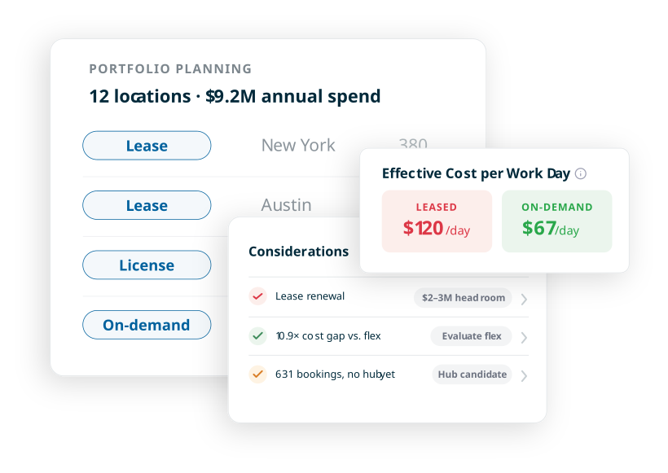
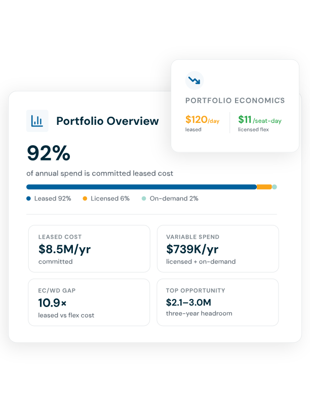
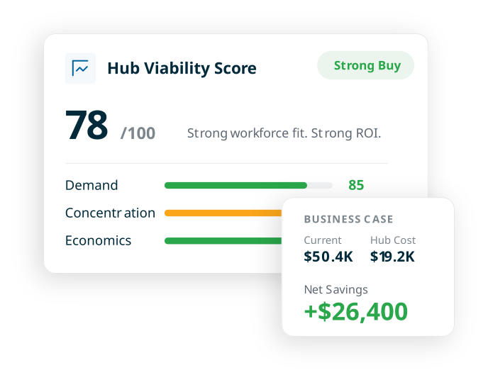
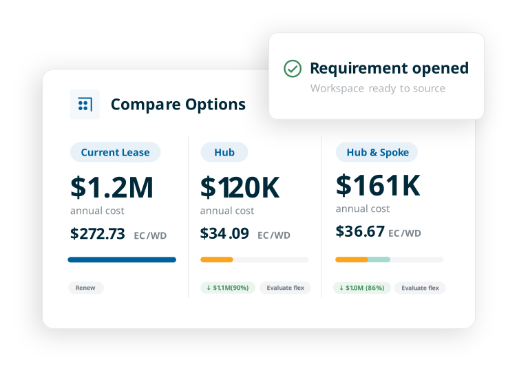

See your leased and flex footprint as one portfolio. Workplace Strategist is your planning tool for where to focus, when to commit, and when to flex.
Get demo
A lease comes due. Demand builds in a new location. Utilization shifts. But the information you need to make the right call is scattered across spreadsheets, inboxes, and side conversations.
Workplace Strategist brings your portfolio, workforce demand, utilization, booking activity, commitments, and market intelligence together, giving you a standing view of what your portfolio needs as conditions change.
Portfolio Compiler brings together your leased space, flex agreements, and on-demand bookings to show where attention is needed most and why.


Hub Locator uses actual booking behavior and market economics to show where dedicated space makes sense and where on-demand is still the better fit.
Scenario Modeler compares the viable options for a location on the same economic basis, making the costs and trade-offs clear.

Workplace Strategist sits within the LiquidSpace Workplace Platform, connecting planning to the sourcing, transactions, and agreements that follow, so context carries forward and what happens next can inform the next decision.
If you've transacted through LiquidSpace, your existing activity gives you a head start. Leases and licenses managed elsewhere can be added through a guided intake process, including by uploading existing portfolio data and documents.
Workplace Strategist isn't another system of record, and it doesn't replace your advisors. It gives your team a consistent, evidence-based way to evaluate where the portfolio needs attention, where demand supports more commitment, and where more flexibility makes sense, before sourcing, negotiation, or execution begins.
Workplace Strategist uses AI to help synthesize evidence, surface patterns and considerations, and explain what warrants investigation. It works within a structured system built on your portfolio, workforce, booking, utilization, commitment, and market evidence. The underlying inputs, assumptions, uncertainty, and confidence remain visible so your team can evaluate the reasoning behind the analysis.
No. Workplace Strategist brings the relevant evidence together, surfaces what deserves attention, and helps your team understand what the evidence supports. The decision remains with your real estate team.
Workplace Strategist combines your portfolio and activity data with LiquidSpace marketplace data. When evaluating a market or workplace model, it uses comparable spaces and market pricing to provide a real-world basis for cost assumptions, while clearly distinguishing your data from benchmark inputs.
The work doesn't have to start over in another system. When the next step connects to another LiquidSpace capability, the relevant context can carry forward into execution. For example, a supported need for private office can become a sourcing requirement in Transaction Manager.
Workplace Strategist gives you a standing view of your portfolio, not a one-time analysis. As demand, utilization, commitments, and other inputs change, you can reevaluate where attention is needed, where commitment makes sense, and whether your current strategy still holds.
See where to focus, when to commit, and when to flex with Workplace Strategist.
Get a demo